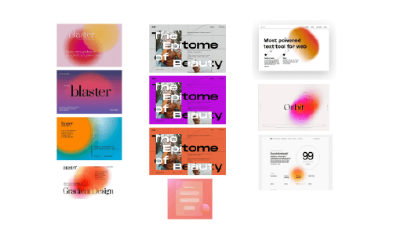
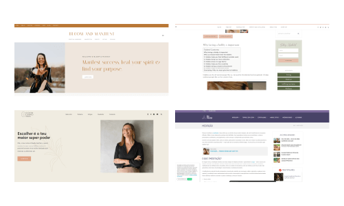
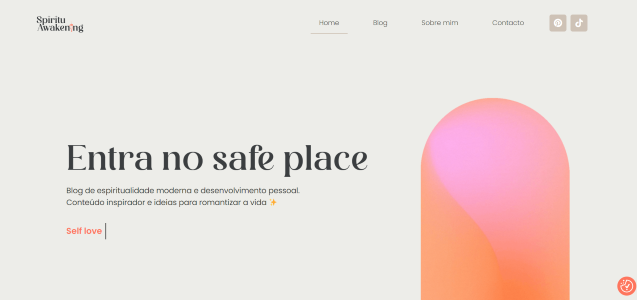
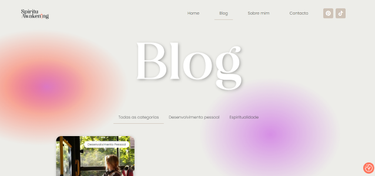
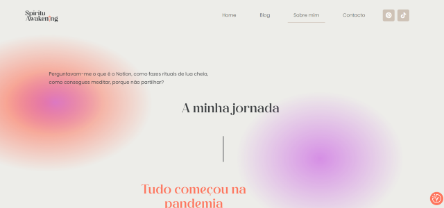
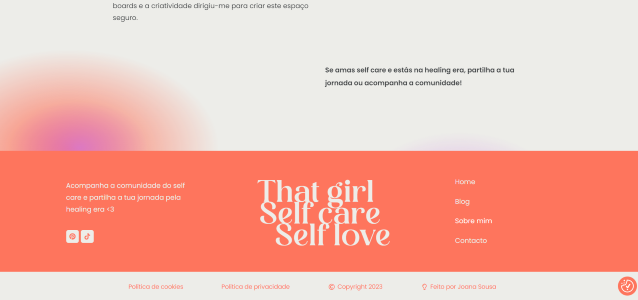

Spiritu
awakening
A blog about modern spirituality and personal development. Done with WordPress and Elementor Pro, with designs created by me in the theme builder.
View webMoodboard and inspiration
- Brutalism trend, with the text superimposed on the images. In addition, the hero will have large letters.
- Background with aurora gradient, which also refers to the nostalgia trend with blur, grain, textures and soft lighting.
- For the newsletter pop up, glassomorphism will be used to draw attention to the CTA.

Competitive research
- To study the competition, I did research about the colors, typographies and elements used. The first three wellness blogs have orange tones. The last one, more directed to spirituality and astrology, is purple.
- It is also noticeable tones of green and pink. The typographies are serifed and the elements allude to nature and minimalism.

Visual identity
The graphic identity of the website was based on competition research and color psychology. It was concluded that the most prevalent color is light orange. A similar, more vibrant and youthful color was chosen. Furthermore, looking at the meanings, orange is associated with energy, and action representing the personal development part of the niche. Purple signifies spirituality, creativity and authenticity, representing the niche of modern spirituality. Neutral colors inspire calmness and are a good base. The trend for contrasting and vibrant colors also served as inspiration.
# FE755D
# D077E4
# EDEDE9
# CEC286
# 383E40



